Desarrollos de chapa
T de caño, curvas, conos, fondos de tolva, transiciones y hélices: la plantilla con sus medidas para trazar, o impresa a escala con la PRO.
Abrir desarrollos →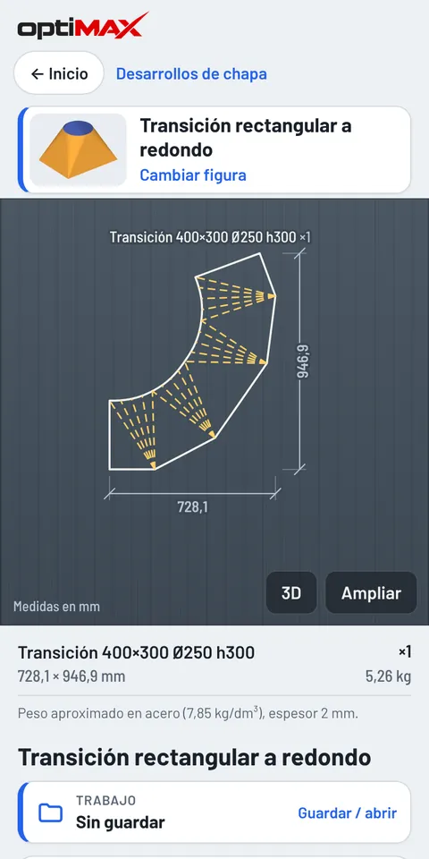
Chapa · Herrería · Carpintería
Cargás las medidas en el celular y tenés la plantilla de la chapa, la lista de corte del portón, las barras a comprar y el orden de los cortes. Y antes de cortar, la ves armada en 3D.
PRO de pago único: 20 USDT
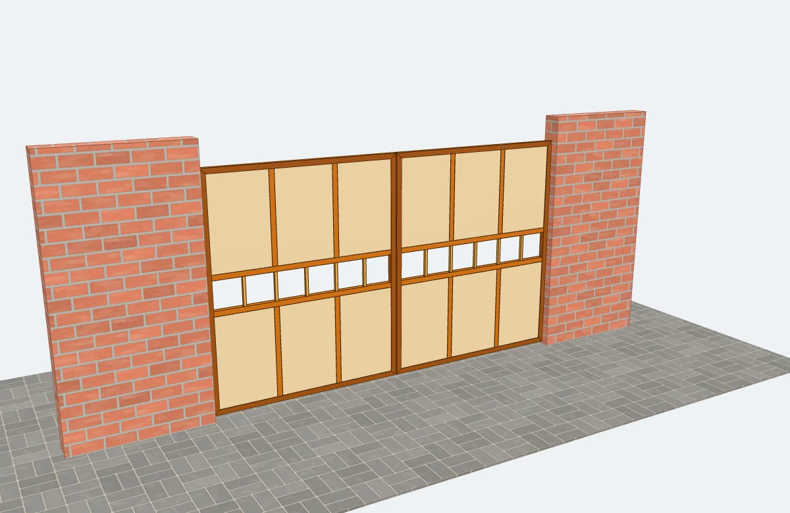
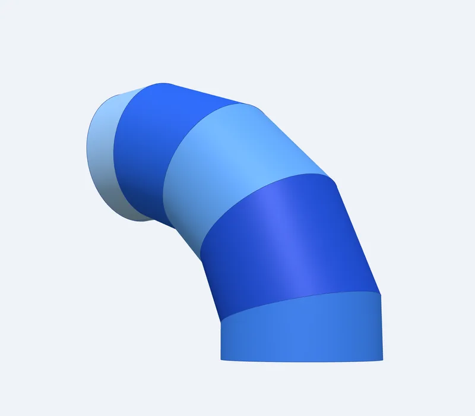
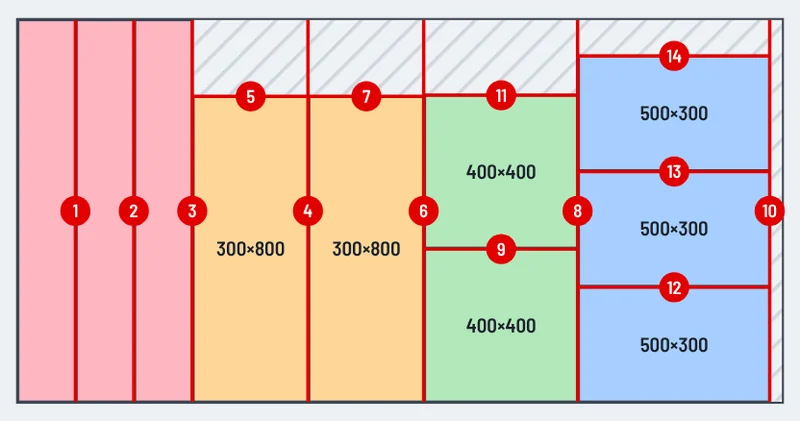
Elegís lo que vas a fabricar, cargás las medidas y la app hace las cuentas. Todo en español y con las medidas en milímetros.
T de caño, curvas, conos, fondos de tolva, transiciones y hélices: la plantilla con sus medidas para trazar, o impresa a escala con la PRO.
Abrir desarrollos →
Rejas de ventana, portones batientes y corredizos: la lista de corte de cada perfil con sus ángulos, las barras a comprar, el peso y el croquis.
Abrir rejas y portones →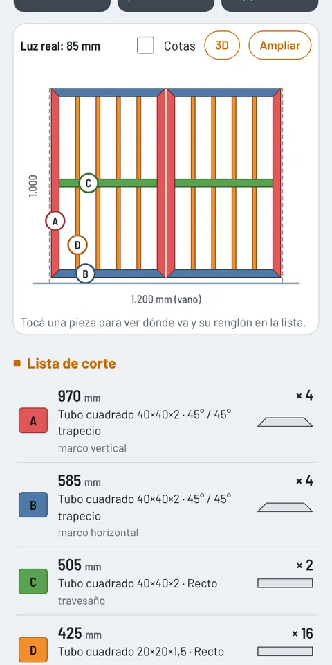
Cuántas barras comprar y cómo cortar cada una para que sobre lo menos posible, con la lista de corte barra por barra.
Abrir barras y tubos →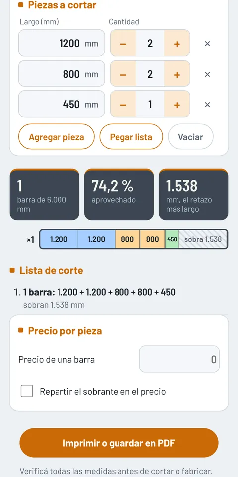
Piezas rectangulares en planchas de melamina o chapa, con cortes de lado a lado, numerados en el orden en que se hacen.
Abrir guillotina →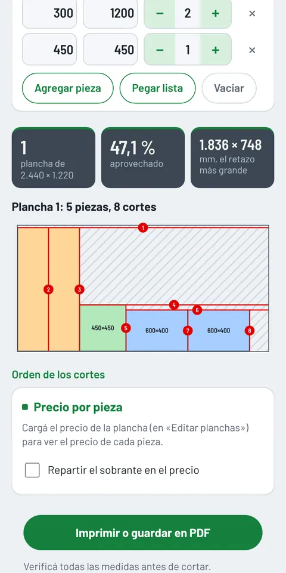
Vista 3D
Cada portón, reja y desarrollo se ve en 3D: lo girás con un dedo y lo acercás con dos. El portón entre columnas o paredes de ladrillo, la reja en el hueco de la ventana y la chapa enrollada como va a quedar. Está también en la DEMO.
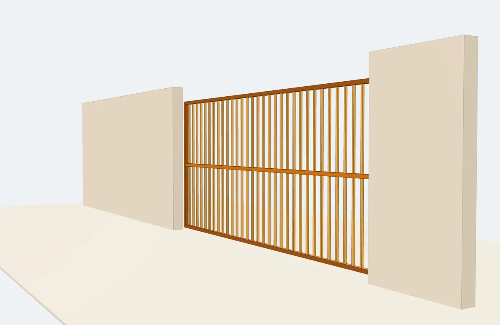
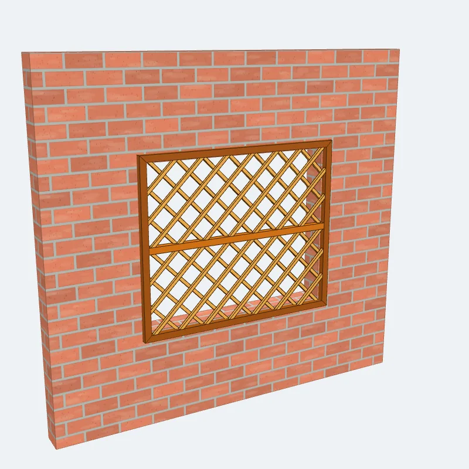
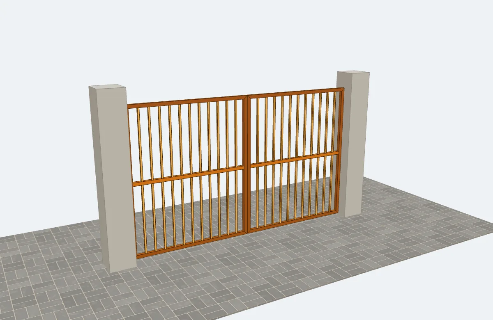
Barrotes, diagonales, rombos, cuadrícula, cruz o chapa ciega. Travesaños repartidos o un travesaño doble al centro, con la franja libre o con sus propios barrotes.
Con chapa, elegís cuántos paños van a lo ancho: la app pone los parantes y te da cada chapa a cortar.
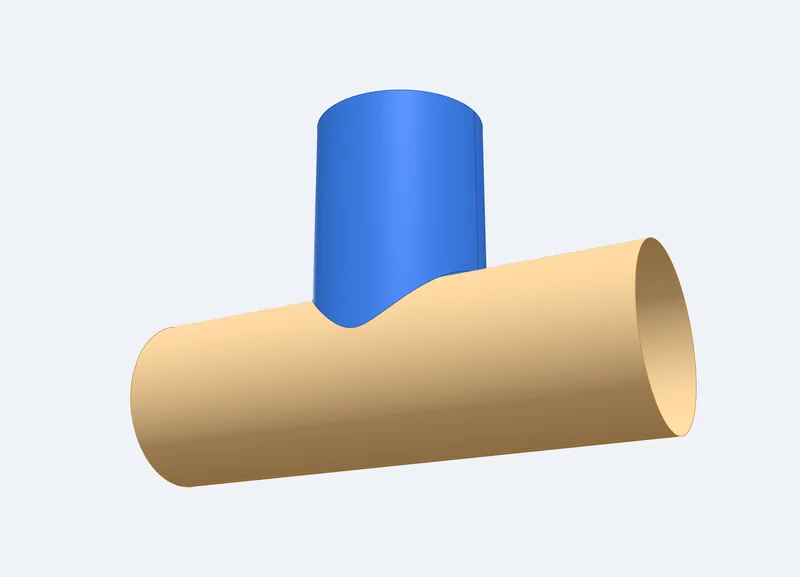
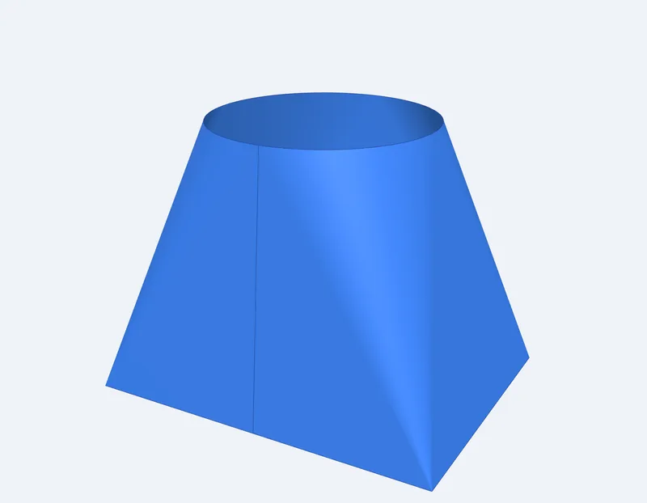
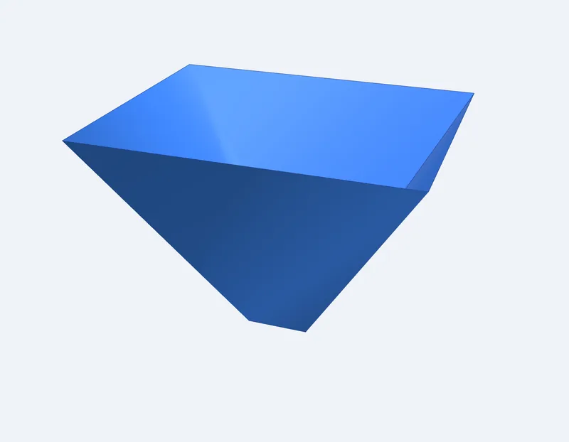
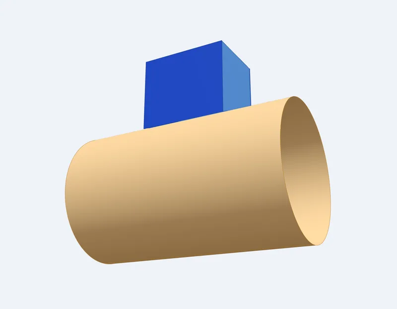
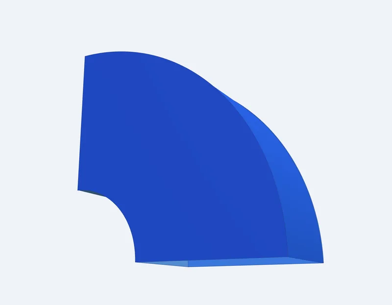
Cargás diámetros, lados, alturas y espesor, y la app te da la plantilla de cada chapa con sus medidas. Con la PRO la imprimís a escala en hojas A4 y te llevás el plano de armado en PDF.
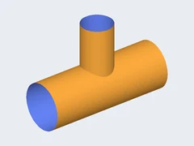
T cilindro / cilindro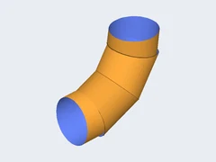
Curva redonda por sectores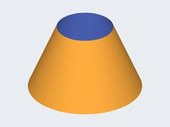
Tronco de cono / reducción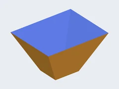
Fondo de tolva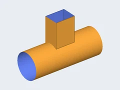
T ramal rectangular sobre caño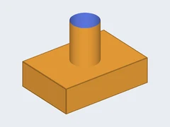
T ramal redondo sobre caja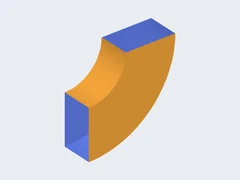
Curva rectangular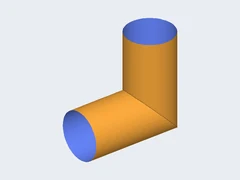
Curva directa 90°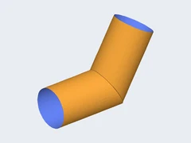
Curva directa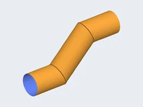
Desvío circular paralelo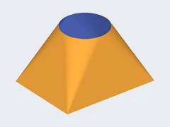
Transición rectangular a redondo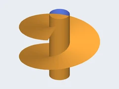
Helicoide (hélice de sinfín)Probás todo gratis, sin vencimiento. Cuando lo necesitás para trabajar, comprás la PRO una sola vez.
Pago único
Se compra desde la app, en el celular: abrila y tocá «Comprar PRO».Pagás con QR, Binance o USDT y la PRO se activa sola.
La licencia va con tu número de WhatsApp y sirve en hasta 2 equipos. La PRO de la app y la de optiMAX para Windows son licencias separadas.
Entrá a app.optimax.lat desde el celular. No pide cuenta ni datos.
En Android, menú ⋮ → «Instalar aplicación». En iPhone, desde Safari: Compartir → «Agregar a inicio» (así no se borran tus datos).
Abrila una vez con internet y después anda sin conexión. Para la PRO: «Comprar PRO» en la app; cuando confirmamos el pago, se activa sola.
Taller es para preparar el trabajo desde el celular. Si cortás con CNC y necesitás el DXF o el nesting de piezas en la plancha, eso está en optiMAX para Windows.
| optiMAX Taller | optiMAX para Windows | |
|---|---|---|
| Dónde se usa | Celular, tablet o PC, en el navegador | PC con Windows |
| Desarrollos de chapa | 12 | Los mismos y más |
| Rejas, portones, barras y guillotina | Sí | Sí |
| Vista 3D | Sí | — |
| DXF para la CNC y nesting en plancha | — | Sí |
| Letras, carteles y pieza desde una foto | — | Sí |
| PRO, pago único | 20 USDT | 49 USDT |
No. Las plantillas se trazan a mano o se imprimen a escala, y las listas de corte son para sierra, amoladora, cizalla o guillotina.
No. Se abre en el navegador del celular. Si querés, la dejás en la pantalla de inicio y se abre como cualquier app.
Sí, después de abrirla una vez con internet. La PRO, una vez activada, sigue andando sin conexión.
Desde la app, en el celular: tocás «Comprar PRO», elegís cómo pagar (QR, Binance o USDT), pagás y tocás «Ya pagué». Se abre WhatsApp con el aviso del pago: lo mandás y, cuando confirmamos el pago, la PRO se activa sola en ese equipo.
En hasta 2 equipos con el mismo número de WhatsApp.
Con la PRO quedan guardados en el mismo equipo. Los de portones, barras y guillotina también se guardan en un archivo .nesting, que podés pasar a otro equipo o abrir en optiMAX para Windows.
No, son productos y licencias separados.